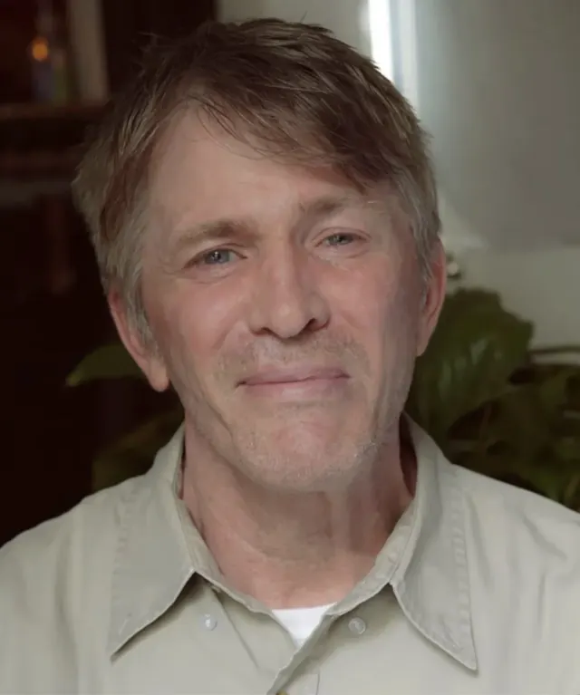
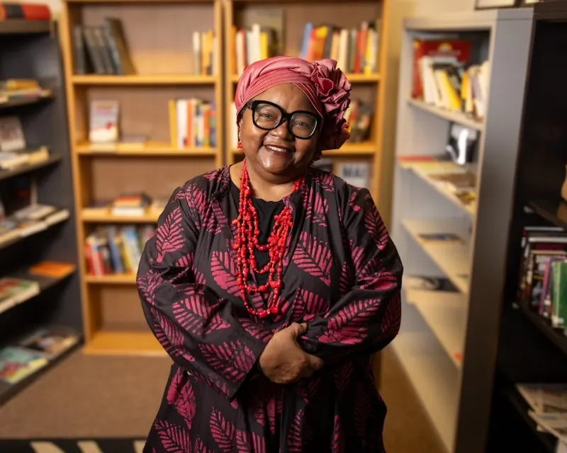

Teacher-owned
lime is run as a teachers' cooperative. Teachers are members and have a say.
Your child's teacher shouldn't have to do it alone.
Teachers carry our future. Too many carry it alone. lime gives them a private, free place to find each other.
Why it matters
What the research says, with every source linked.
of K-12 workers in the U.S. said they feel burned out at work "always" or "very often", more than in any other industry. Among teachers it was 52%.
Gallup, 2022About twice as many teachers as comparable working adults reported frequent job-related stress or burnout.
RAND, State of the American Teacher survey, 2024of open teaching positions are created by teachers who leave the profession.
Learning Policy Institute, 2017New York City student observations over 8 years: students in grade levels with higher teacher turnover scored lower in both English language arts and math.
Ronfeldt, Loeb and Wyckoff, 2013"Research shows that relationships and feeling socially supported are the most important drivers of workplace wellbeing and job satisfaction."
University of Oxford Wellbeing Research Centre with the IB, 2024teachers in 336 Miami-Dade public schools: teachers and schools with better-quality collaboration had better achievement gains in math and reading, and teachers improved at greater rates.
Ronfeldt, Farmer, McQueen and Grissom, 2015Our answer
lime is run as a teachers' cooperative. Teachers are members and have a say.
Messages are end-to-end encrypted. We can't read them.
No ads. We never sell data. Gifts and grants keep it free.
Anyone can read how lime works.
Stories
lime was founded by Shem Rajoon and Jean Chung, with many teachers who volunteered their time. Together we made it a reality, and it's only the beginning.

From 1996 to 2011, teenagers in Harlem ran a real newsroom. Rich Calton wrote the book about it: The Legacy of HarlemLIVE: Empowering Youth Through Journalism and Experiential Learning, third edition (2026).
Read about the book
Dr. Okome edits Ìrìnkèrindò: a Journal of African Migration. One of its pieces: "Women, Water, and Migration In Africa".
Visit the journalAre you a teacher with something to say about connecting with other teachers? We'd like to hear it, and with your say-so share it here.
Write to usHow we're built
The Lime Messenger Foundation, a teachers' cooperative, owns Lime Messenger LLC, which builds lime. Teachers are members and govern. These are the promises the foundation keeps for good:
Everything we build is for the teachers who shape our children, and the children they teach.
What teachers say to each other is theirs. We build so that we can't read it.
The people who use lime help decide what it becomes.
No ads, no data sales, no price. lime runs on gifts and grants.
The code is open source, so anyone can see what lime does.
People
Founder
Founder
Joining the board. Edits Ìrìnkèrindò: a Journal of African Migration.
Joining the board. Wrote The Legacy of HarlemLIVE.
We're looking for teachers to help govern lime. If that's you, write to us.
Give
lime is free, has no ads and sells nothing, so it runs on gifts and grants. Here is what gifts would pay for, as plans and not promises:
We're registering Lime Messenger Foundation. Gifts open as soon as it can receive them.
A foundation or an anchor donor? Write to us.